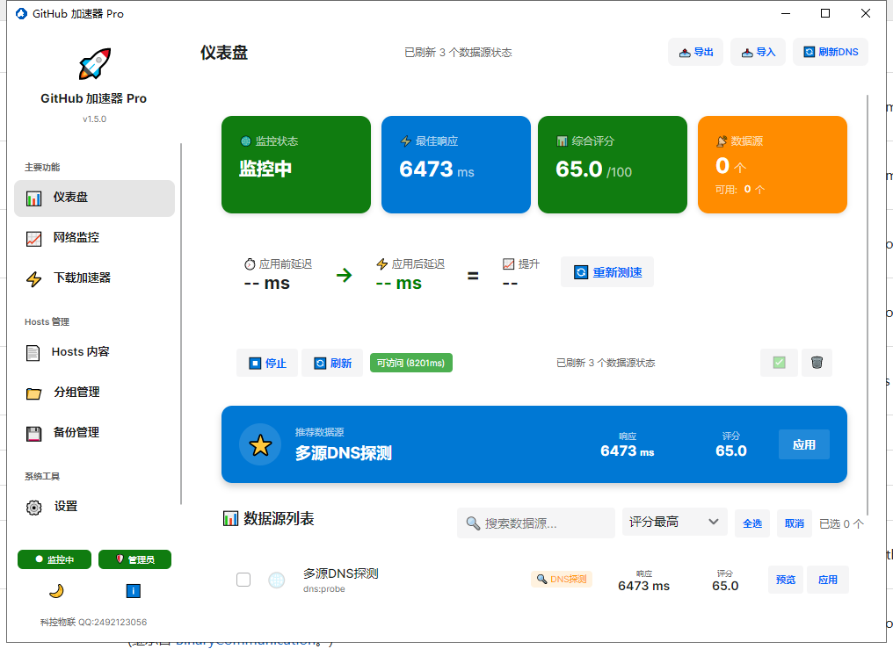
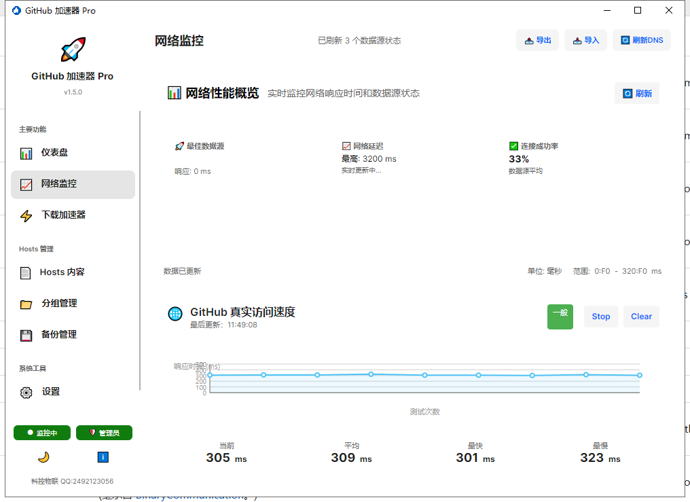
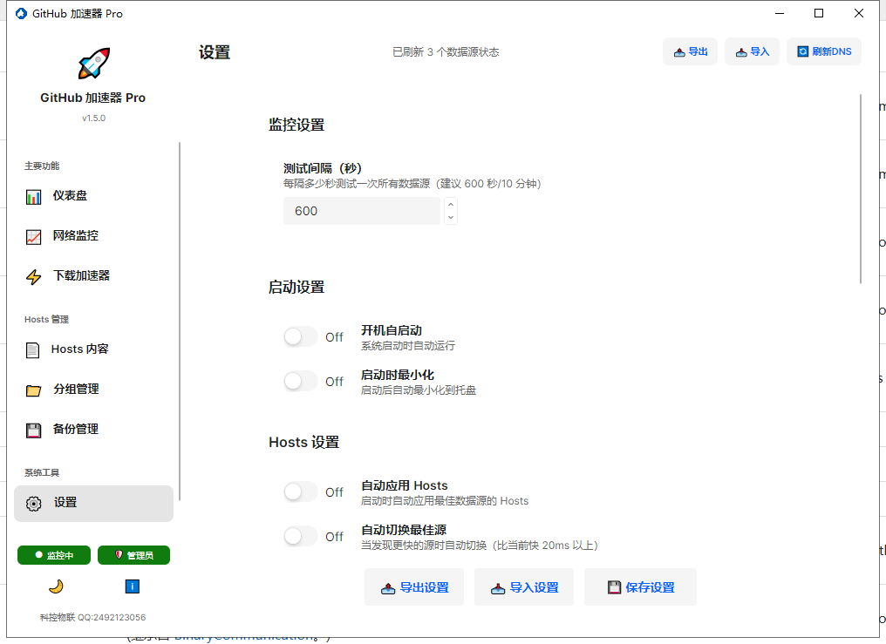

GitHub 加速器 Pro 用户手册
版本：v1.5.0 | 开发：科控物联科技有限公司 | 更新时间：2026-07-20
一、产品简介
GitHub 加速器 Pro 是一款专为国内用户设计的 GitHub 访问加速工具。它通过智能优选最佳数据源、自动更新 Hosts 文件、提供 Git 代理与下载镜像转换等功能，帮助您更快速、稳定地访问 GitHub 资源。
核心功能一览：
- 多源智能优选：自动测试多个数据源，推荐最佳 Hosts
- 一键应用 Hosts：修改系统 Hosts 文件，立即生效
- 网络监控：实时查看数据源性能与 GitHub 真实访问延迟
- 下载加速：将 GitHub 链接转换为可用的镜像加速链接
- Git Proxy：一键配置 Git 全局代理，加速 clone/push/pull
二、主界面与仪表盘
打开应用后，默认进入仪表盘页面。左侧为导航栏，右侧为功能区域。顶部显示当前页面标题与操作按钮。

图 1：仪表盘 - 查看监控状态、推荐数据源与测速对比
2.1 核心指标卡片
- 监控状态：显示当前是否正在自动测试数据源
- 最佳响应：当前响应最快的数据源延迟
- 综合评分：最佳数据源的健康评分（满分 100）
- 数据源：可用数据源总数与可用数量
2.2 推荐数据源
系统会自动推荐综合表现最佳的数据源，点击蓝色应用按钮即可将该源对应的 Hosts 写入系统 Hosts 文件。应用前请确保以管理员身份运行本软件。
2.3 测速对比
点击重新测速，系统会先测量未应用 Hosts 时的 GitHub 访问延迟，再自动应用最佳 Hosts 后测量，最终给出提升百分比。整个过程需要管理员权限。
注意：测速时会临时移除已应用的 Hosts 区块，测速结束后再自动恢复。请保持网络连接稳定，避免在测速过程中进行其他大量下载。
三、网络监控
网络监控页面将性能图表与GitHub 真实访问速度合并展示，方便您同时掌握数据源趋势与 GitHub 实际访问质量。

图 2：网络监控 - 数据源性能图表 + GitHub 真实访问延迟
3.1 性能图表
- 显示各数据源响应时间趋势
- 展示最佳数据源、网络延迟范围、平均连接成功率
- 点击右上角刷新可立即更新图表
3.2 GitHub 真实访问速度
- 自动定期访问 github.com，测量真实延迟
- 显示当前、平均、最快、最慢延迟
- 状态标签：优秀 / 良好 / 一般 / 较差
- 可点击 Stop/Clear 控制监控与清空历史
四、下载加速器
下载加速器可将 GitHub 的 raw 文件、Release、仓库主页、Git Clone 链接等转换为国内可访问的镜像链接。
图 3：下载加速器 - 粘贴 GitHub 链接，一键生成加速链接
使用步骤
- 复制需要加速的 GitHub 链接
- 在输入框中粘贴链接
- 选择需要的链接类型（Raw 文件、Release/ZIP、Git Clone 等）
- 点击生成加速链接，复制结果使用
五、设置
在设置页面可以配置监控间隔、启动行为、Hosts 自动应用、Git Proxy 等选项。

图 4：设置页面 - 监控、启动、Hosts、Git 代理等配置
5.1 常用设置项
| 设置项 | 说明 |
|---|
| 测试间隔 | 自动测试数据源的时间间隔，建议 600 秒（10 分钟） |
| 开机自启动 | 登录 Windows 后自动运行本软件 |
| 启动时最小化 | 启动后自动最小化到系统托盘 |
| 自动应用 Hosts | 启动时自动应用当前最佳数据源的 Hosts |
| 自动切换最佳源 | 当发现更快的源时自动切换（需已应用 Hosts） |
| 自动刷新 DNS 缓存 | 应用 Hosts 后自动刷新系统 DNS 缓存 |
| 最小化到托盘 | 关闭窗口时最小化到系统托盘而非退出 |
5.2 Git Proxy 设置
在设置页面下方的Git 设置区域，您可以：
- 查看当前 Git Proxy 状态
- 输入代理地址（如
https://ghproxy.net）
- 点击设置代理一键写入 Git 全局配置
- 点击清除代理移除 Git 全局代理
- 点击使用推荐代理快速设置为默认推荐地址
管理员权限要求：修改 Git 全局配置（~/.gitconfig）需要管理员权限。如果未以管理员身份运行，Git Proxy 设置/清除按钮将不可用，页面会显示橙色提示。
六、管理员权限说明
本软件部分功能需要管理员权限：
- 应用 / 清除 Hosts 文件
- 刷新系统 DNS 缓存
- 进行应用前后测速对比
- 设置 / 清除 Git 全局代理
请以管理员身份运行本软件：右键点击程序图标 → 以管理员身份运行。左下角状态栏会显示当前运行身份（管理员 / 普通用户）。
七、常见问题
Q1：应用 Hosts 后 GitHub 仍然打不开？
请尝试以下步骤：
- 确认软件以管理员身份运行
- 点击顶部刷新 DNS按钮
- 在设置中开启自动刷新 DNS 缓存
- 尝试切换其他数据源后重新应用
- 重启浏览器再试
Q2：测速对比显示"降低"或"持平"？
测速结果受当前网络状况影响。若显示降低，说明当前网络环境下该数据源提升不明显，可尝试：
- 等待网络稳定后重新测速
- 在数据源列表中手动选择其他源应用
- 结合 Git Proxy 或下载加速器使用
Q3：Git Proxy 设置失败？
请检查：
- 是否以管理员身份运行
- 系统中是否已安装 Git 并添加到 PATH
- 代理地址是否可访问
Q4：如何关闭开机自动显示的快速上手指南？
在快速上手指南窗口中勾选"下次不再显示"并关闭即可。
八、联系与支持
如有问题或建议，欢迎通过以下方式联系我们：
- 科控物联 QQ：2492123056
- 微信公众号：科控物联